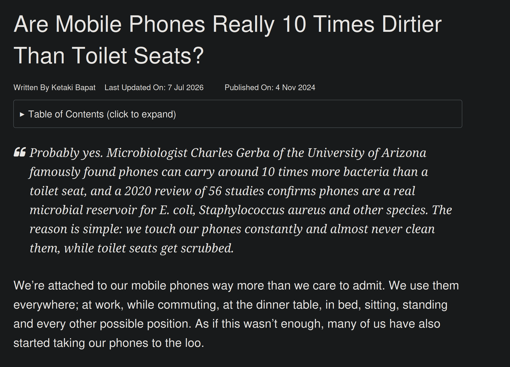
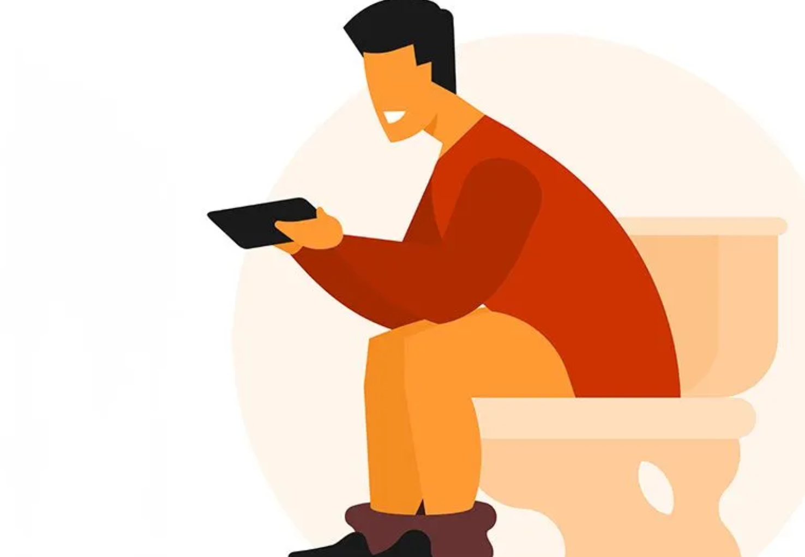

I would honestly just say don't use your phone. And leave it at that, but I think that before fighting that battle, I need to fight the battle of bathroom scrolling!
Did you know that your phone has more bacteria on it than a toliet seat?! I mean...think about it, we never just wash our phones the way we would wash our hands, our clothes, silverware, etc.
We go outside and touch dirt, then touch our phones. We touch chemicals, then touch our phones. We touch dusty shelves at the store, then touch our phones!

There is literal fecal matter on your phone. When you're just chilling on the toliet and use your phone during that whole process, you are SOILING IT! In my humble, yet very opinionated opinion, people need to learn to just do their business WITHOUT having any stimulations. Even if that means you're sitting there for like 20 minutes or half an hour!
I remember I had an argument with someone about this one time, and I said something like well before you had a smartphone then you had to just sit on the toliet and be patient. And the sweetheart of course said nah I just played on my DS wHeN iN tHe BaThRoOm. :C
I'm actually somewhat apprehensive to touch other people's phones due to this. Even if you're a clean-freak in other ways, as soon as you touch your phone, or someone else's phone, then that's it. And then you go on to touch other things and spread the evil fecal bacteria!
And in truth, other surfaces contain tons of germs that you wouldn't think of. Like light switches don't get cleaned often, nor do door knobs. And while I'm tempted to say that phone screens are still dirtier, we all touch our phones, then touch the door knobs and light switches. So yeah....please don't do these things.
That's about all for today's rant. I know I haven't posted a blog in a while, but I'm more of a "whatever, whenever" kind of guy, so that way it's not forced and it's more creative. And I put the pen up for a while but something irritated me to make me write this lol.

Return to main page